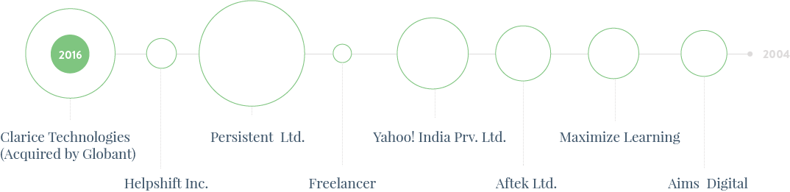
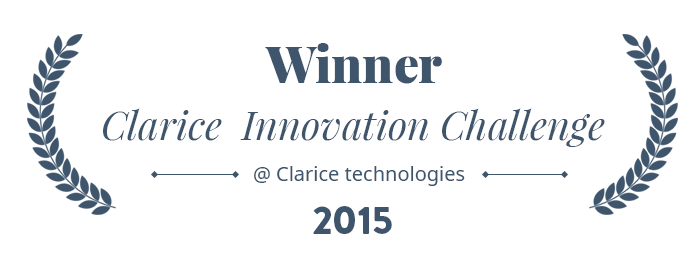
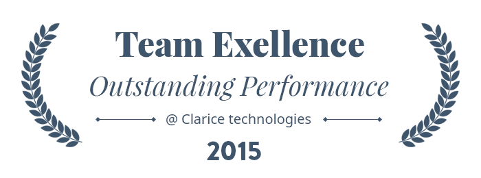
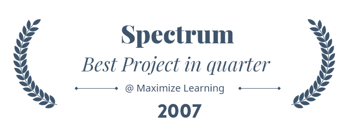
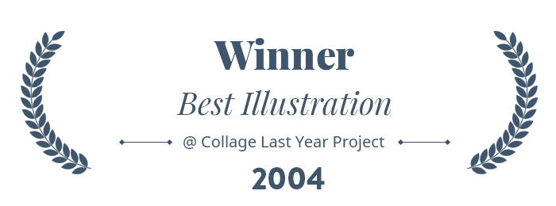

Experience designer.
Loves creating digital products journies for meaningful products.
UX designer and strategist with 10 years of experience in consumer and enterprise products. Skilled in designing meaningful and delightful products around customer needs. Enjoys setting up the design process, design culture, and building UX teams.
My main focus to work on highly functional digital systems that were pragmatic and solved real problems for real users and achieve desired business goals.

Professional Experience
Lead Uesr Exprience Designer
Clarice Technologies (Acquired by Globant)
Pune, India
Dec 2013 - Till Date
We begin with understanding technology, it's pros - cons and limitation. Then we had worked on the mind map to define eco-system. Responsible for all areas of Helpshift products, mobile SDK, an agent application, sales site. Worked on various user research studies like focus group discussion, card sorting, heuristic evaluation to improve the user experience. Worked on task flows, detailed interaction design, UX specification documentations for features like issues list, issues sorting, bulk action, smart views, better counting.Product Designer
Helpshift Inc.
Pune, India
Mar 2013 - Oct 2013
We begin with understanding technology, it's pros - cons and limitation. Then we had worked on the mind map to define eco-system. Responsible for all areas of Helpshift products, mobile SDK, an agent application, sales site. Worked on various user research studies like focus group discussion, card sorting, heuristic evaluation to improve the user experience. Worked on task flows, detailed interaction design, UX specification documentations for features like issues list, issues sorting, bulk action, smart views, better counting.Sr. Team Lead Visual Design
Persistent Systems
Pune, India
Apr 2010 - Feb 2013
Served in multiple roles including Individual contributor, On-site functioning from Toronto Canada and lead visual design division. Involve in the end to end project lifecycle like project estimation, planning to final deliverables. Work with the engineering, product management, marketing, and other departments to drive user experience direction. Manage and mentor UX design team to providing direction on visual Experience, for the web, mobile, tablets, and television applications.UX Consultant
Freelance
Pune, India
Sep 2009 - Mar 2010
Stakeholders interviews, information architecture, interaction design, prototyping, Visual design, Front end development, XHTML, CSS, Specifications and guidelines, Development support. Extensive collaboration with product development team, to make successful product.Startups
RadSpa, Proxify, Urban Spoils
Sr. Interaction Designer
Yahoo! India Pvt. Ltd.
Bangalore, India
Nov 2007 - Aug 2009
Participated in strategy plttanning for major India specific websites. Developed wireframes and visual design for different websites such as Avatar Town, Election, SpotM, Yahoo India Front page, Finance. Worked closely with user research team to planned, designed, conducted and evaluated usability tests cases. Collaborated closely with product management to define great user experience!User Interface Designer
Aftek Ltd.
Pune, India
Sep 2006 - Oct 2007
Responsible for user interface design for web and desktop applicaon worked on the ui design for embedded hand held devices, touch screen applicaon for LCO. Played key role in products branding strategy design like logos, packaging, posters, case studies.Graphic Designer
Maximize Learning Pvt. Ltd.
Pune, India
Apr 2005 - Sep 2006
Worked on visual design for Instruconal e-learning modules. Designed Interacons and interfaces for learning projects, web applicaons. Worked on lntro animaons, company show-reel, moon graphics.Design Manager
Aims Digital Pvt. Ltd.
Pune, India
Jan 2004 - Mar 2005
Responsible for website design, branding, print media, adversing campaigns designed characters, background graphics for CD ROM and CBT projects.Education
B.F.A. in Applied Art
Pune, India
1999 - 2004
Awards



